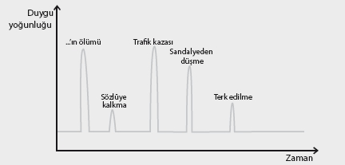

Biraz sonra sizinle paylaşacağım uygulamayı yapmanızı şiddetle tavsiye ederim.
Kendinize 10 gün boyunca, günde yarım saat zaman ayırarak, hayatınızda yaşadığınız en kötü 10 olayı temizleyecek ve geçmişinizden önemli oranda sıyrılıp “özgürleşeceksiniz”!
Bir word ya da excel dosyası açın ve şu ana kadar yaşadığınız tüm kötü olayların listesini yapın. Listeyi yaparken kendinize şöyle bir soru sorun:
“Hayatımdan bazı anları çıkarabilme, yaşadığım
1 dakika, 1 saat, 1 gün veya 1 ayı hiç yaşamama
şansım olsa hangi zamanları seçerdim?”
Özellikle, hatırlayabildiğiniz çocukluk anılarına fazlaca önem gösterin. Olayların detaylarını yazmanıza gerek yok, sadece sizin ne olduğunu bilmeniz yeterli.
Yazdığınız her olayın yanına, bu olay ile ilgili şu an hissettiğiniz kötü duygunun derecesini, 0-10 arasında bir sayı vererek yazın. Liste, aşağıdakine benzer şekilde olacaktır.
| Olaylar | Yoğunluk |
| 3 sene önce arabamla geçirdiğim trafik kazası | 7 |
| .......’in ölümü | 9 |
| 13 yaşımda hocanın çalışmadığım halde sözlüye kaldırması ve sonrası | 5 |
| ÖSYM’yi kazanamadığımın açıklandığı gün | 7 |
| ......’nin beni terk ettiği gün | 6 |
| 5 yaşında sandalyeden düşüp kafamın yarılması ve dikiş atılması | 7 |

Tabii ki büyük travmaların etkisiyle daha küçüklerinki bir olmayacaktır. O yüzden çözmeye en güçlü travmalardan başlayarak 10 en “güçlü” travmamızı, her gün yaklaşık 30 dakika ayırarak formatlayacak, bu kötü olayların beynimizdeki etkilerini temizleyeceğiz...
Bu süreç sonunda, stresimizi arttıran, sağlığımızı bozan, yanlış inançlara sebebiyet veren birçok olayı çözmüş olacağız. Bu arada, stres seviyemizin çok azaldığını, hayatımızın çok daha güzelleştiğini, bazı sağlık sorunlarından kurtulduğumuzu tecrübe edebiliriz.
Belli bir süre sonra, büyük travmaları çözmüş olmanın etkisiyle rahatlayacak, belki de küçüklerle uğraşmak dahi istemeyeceksiniz.